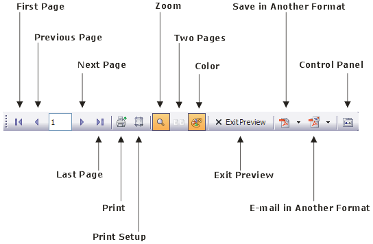
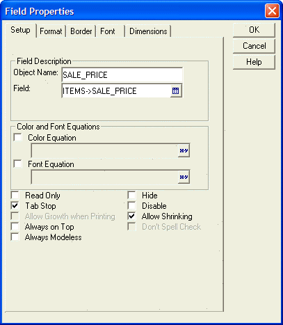
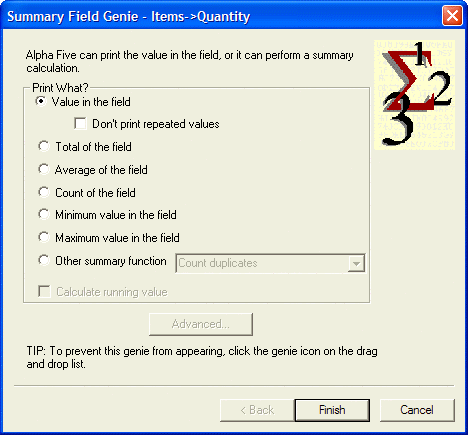
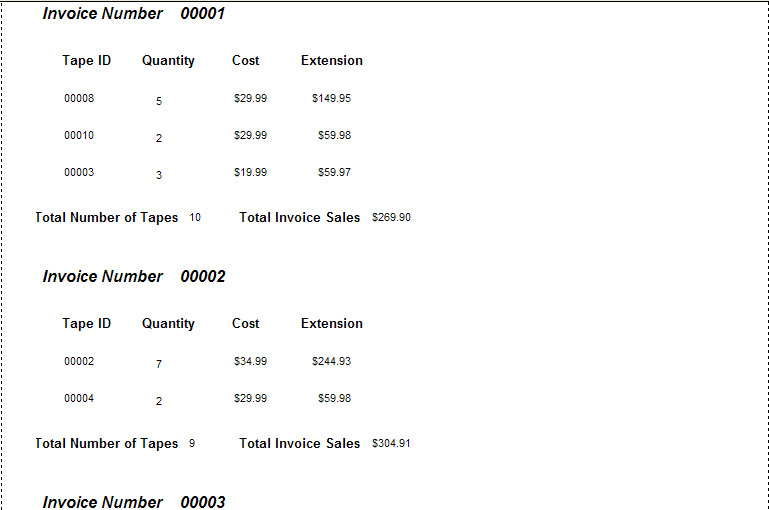

Working with Reports
Reports, Letters, and Labels are Alpha Anywhere layouts for data output. In this lesson, you learn how to create reports. You learn about letters and labels in the following lesson.
Reports are a versatile type of layout for printing data. In reports, you can group related records together, perform calculations, order and select the records that appear, divide pages into columns, and design reports with page headers and footers, graphics, and more. Alpha Anywhere presents a quick and easy way to get started with creating Reports.
Contents
The Quick Report Genie guides you through the process of creating a Report. You use the Genie selection dialog boxes to designate the table or set on which to base the report, the records to include in the report, the record order, and the display format of the report. The New Object Genie generates a Report layout based on your input, ready for printing or additional customizing.
For example, you decided to develop a phone campaign directed toward your current customers to solicit additional business. The data you need is a list of all your customers and their phone numbers. In the next exercise, you use the Quick Report Genie to produce a customer list.
To create a report:
Open the AlphaMovies database.
 Note : You should
have already created the AlphaMovies database
in the Creating a Database lesson.
Note : You should
have already created the AlphaMovies database
in the Creating a Database lesson.
In the Control Panel, display the Reports tab, and click New. The New Report dialog appears.
Select the "Customers" table.
Select Use Quick Report and click OK.
In the resulting dialog box, you select the table or set that provides the source of data for the report. You can only select one data source for the report.
The Quick Report Genie appears.
In the next steps, you specify the title, the style, and the fields that contain the data for the report.
In the Title field, type "Customer List". The following table describes the report Styles.
|
Style |
Description |
|
Tabular |
Lists data in a table; fields comprise the columns, and records comprise the rows. |
|
Repeating Form |
Presents the data vertically, with each field below the previous field, and a gap between each record. |
|
Groups with Totals |
Divides data into logical collections of records, called groups. Calculations can be made on each group. For example, you can group movies on a category field (Horror, Romance, Action) and display the total sales for each category. |
|
Summary Report |
Displays a condensed view of the data in a table or set. Summary reports are like Groups With Totals reports, except that individual record data is not listed. Instead, you see only the results of Summary calculations. For example, you would see only the invoice totals and not the cost for each invoice line item. |
In the Style drop-down list box, keep the default selection, "Tabular". You add fields from the Table field area by double-clicking the field name, or by dragging the field to the Fields list.
Double-click the following fields: "Customer_ID", "First_Name", "Last_Name", and "Phone_Number".
After specifying the fields for the report, click the Order button to set the sort order.
Double-click the "Customer_ID" field. "Customer_ID" appears in the Sort Fields column.
Click the Options button.
In the last step, you select some report appearance options. Select Bold in the Titles frame, and Center title in the Page frame.
Click OK to generate the report layout. The Quick Report Genie opens the Report Editor displaying your report layout.
To preview the report, select File > Print Preview, or click
 Print Preview. The report preview
appears, as does the Print Preview
toolbar.
Print Preview. The report preview
appears, as does the Print Preview
toolbar. Select Exit Preview. The Report Editor appears.
Click the Save button on the toolbar. The Save Report As dialog box appears.
Enter the name, "Customer List", and click OK.

At this point, you can edit the layout, add design elements, such as frames and borders, or preview and print the report without modifications.

In the next sections, you learn more about reports and explore the Report Editor.
Understanding Report Structure
Alpha Anywhere divides reports into the following three Section Types: Report, Detail, and Group.
|
Section Type |
Description |
|
Report |
Prints at the beginning and end of the report. The Report section is a wrapper for the rest of the report. |
|
Detail |
Prints individual records, and repeats until all the records have been printed. |
|
Groups |
Groups are records that have the same key. Group sections repeat at the beginning and end of each group of records. If you do not specify a Group, the Detail section prints as one continuous section. |
Within each of these Section Types, you can have multiple layout regions. A layout region is where you place fields and text, and other objects.
Report sections and layout regions print at different times. For example, the Report Header layout region prints once at the beginning of the report and the Report Footer layout region prints once at the end of the report. Group sections print once at the beginning of each group and once at the end of each group. For example, you might group movie titles by category (Horror, Drama, and so on). The Group Header prints at the beginning of the category group and the Group Footer prints at the end of the category group. Each record (movie title) in the group, prints in the Detail layout region, located between the Group Header and Group Footer. Each group, with its associated Detail region, prints repeatedly until all the groups of records are printed. as such, you would have a complete listing of Horror film titles, Drama film titles, and so on.
The Report Editor creates a blank report that appears with some of the following report sections.

The Report Editor shows the division between sections and layout regions with section title bars. On each title bar there is a Show/Hide button which lets you toggle the appearance of the section.
The Show/Hide buttons only control the report display in the Report Editor ; they do not effect the report appearance when you print or preview it. You can also show and hide report components by selecting Sections, Titles, or Regions from the View menu.
The following table describes some report layout regions. A spillover page occurs when the detail section of a group begins on one page and ends on another.
|
Section |
Description |
|
Report Header |
All objects placed in this section appear once at the beginning of the report. Typically, you place the report title, corporate logo, and background information here. |
|
Page Header |
All objects placed in this section appear once at the top of every page of the report. |
|
Group Header |
All objects placed in this section appear once at the beginning of each data group of the report but not at the top of the spillover pages. When you group in a report, you can place the field on which the report is grouped in this section. |
|
Detail Header |
All objects placed in this section appear once at the beginning of the detail region. Field column headings are commonly placed in this section. |
|
Detail |
All objects placed in this section appear once for each record in the report. |
|
Detail Footer |
All objects placed in this section appear once at the bottom of the Detail region. |
|
Group Footer |
All objects placed in this section appear once at the end of data group of the report but not at the bottom of the spillover pages. When you group in a report, you can place summary calculations that are performed for each group in this section. |
|
Page Footer |
All objects placed in this section appear once at the bottom of every page of the report. |
|
Report Footer |
All objects placed in this section appear once at the end of the report. Grand total information for all records is commonly placed in this section. |
Other layout regions include:
Continuation Headers and Footers
Repeating Group Headers and Footers
Special Page Headers and Footers
On the Report Editor toolbar, click the Print Preview button to preview your Report. You can navigate in the Preview window, using the Print Preview toolbar.

Select File > Print, or click the Print button on the toolbar to display the Print dialog box. Use the Print dialog box to specify a printer, range of pages, and number of copies to print.
You can convert your report to an Adobe Acrobat Portable Document Format (PDF) file to distribute to others. Anyone who has the Acrobat Reader, which is free and widely distributed, can read the PDF file.
To print a report to a PDF file:
With the Customer List Report in the Report Editor, click the Print Preview button. The report appears in the Print Preview window.
Click the Save in Acrobat PDF Format button on the toolbar. Alpha Anywhere converts the Report to PDF format, and displays the report in the Adobe Acrobat Reader.
Click the Email Report as a Acrobat PDF Attachment button on the toolbar. Alpha Anywhere opens your email program, and attaches the report PDF file to a new email message.
Click Exit Preview. The Customer List Report appears in the Control Panel.

Alpha Anywhere assigns the new PDF file the same name as the report, with a PDF extension.
In the next section, you create a new report starting with a blank report.
In the following procedures, you create the Invoice Items Report, starting with a blank report.
To create a report:
In the AlphaMovies Control Panel, display the Reports tab, and click New. The New Report Genie appears.
Select the "Items" table as the data source, and click Next.
Select Start from a blank Report and click Finish. A new, blank report appears in the Report Editor with three empty sections.
Click the
 Drag-and-Drop List button on the
toolbar.
Drag-and-Drop List button on the
toolbar.Click the Horizontal alignment button in the Drag-and-Drop List window.
Hold the Shift key, select the following Items fields: "Tape_ID", "Quantity", and "Sale_Price", and drag them into the Detail layout area of the report. The fields appear in the Report.
In the Drag-and-Drop List, under Calculated Fields, select "New Calc/Summary Field", and drag it into the report, next to the Sale_Price field. The New Calculated Field dialog box appears.
Enter the Name, Extension, and click the Expression Builder button. The Expression Builder dialog box appears.
Create the expression: Quantity*Sale_Price, and click OK.
-
Click OK. Alpha Anywhere adds the Extension field to the report, next to the Sale_Price field.
You can align selected objects in one layout region by using the Arrange menu and toolbar, like you did when working with forms. In addition, you can use the horizontal and vertical rulers, to move and align selected objects across several layout regions.
For small movements of selected objects, you can use the Shift+Arrow keys, and for slightly larger movements, use the Arrow keys.
Click the
 button on the toolbar, and
save the report as "Invoice Items".
button on the toolbar, and
save the report as "Invoice Items".
You use the Drag-and-Drop List to insert field objects in the report layout areas.
When you select a field to insert and drag it to the report section, an object frame appears.
In addition, when you release the mouse button, the Summary Field Genie appears.
The Drag-and-Drop List window contains a Genie button that is on by default. When the Genie button is on, a Summary Field Genie appears that lets you perform a summary calculation for a single field which you are adding to the layout. If you do not want the Summary Field Genie to appear, click button in the Drag-and-Drop List to turn it off.
When adding multiple fields, the Summary Genie does not appear. Also, when adding multiple fields, you can specify their alignment as vertical or horizontal by clicking the appropriate layout button in the Drag-and-Drop List window. After you have placed fields on the report, you can change the style, appearance, and other attributes of the fields.

You can resize report sections, by placing your cursor over a horizontal layout boundary. When the cursor becomes a two-headed arrow, click and drag to adjust the section height.
In the next step, you add a calculated field for the product of the quantity times the sales price.

Alpha Anywhere displays the expression in the New Calculated Field dialog box.
In the next section, you insert additional sections in the report, and add objects.
In the next procedure, you add sections to the Invoice Items report.
To add a report section:
With the nvoice Items report in the Report Editor, right-click on the Report section and select Properties, or select Report > Properties > Report Properties from the menu bar. The Report Properties dialog box appears.
Display the Head/Foot tab.
Select Has Page Header, Has Page Footer, and click OK. The new sections appear in the report. You might have to enlarge the Report Editor window to see them.
Alpha Anywhere provides predefined system fields that you can add to your report. These system fields can display information such as Page numbers, current date, and sort order.
The following table describes Alpha Anywhere system fields.
|
Field |
Description |
|
Date |
Prints the computer's system date on the report. This predefined calculated field uses the DATE() function as its expression. |
|
PageNumber |
Prints the current page number of the report. This predefined calculated field uses the PAGENO() function as its expression. |
|
PageXofY |
Prints the page number and the total number of pages in the report. For example, a field value of "Page 1 of 8" indicates the first page in a eight page report. |
|
Current_Order |
Prints the sort order expression for the report. |
|
Current_Filter |
Prints the report record selection expression on the report. |
You use the Drag-and-Drop List to insert system fields in a report.
To insert a system field in the report:
Open the Invoice Items report in the Report Editor.
Select "Date" under System fields in the Drag-and-Drop List, and drag it onto the report, into the Page Header section.
Select "PageXofY" under System fields in the Drag-and-Drop List, and drag it onto the Report, into the Page Footer section. The system fields appear in the report.
Click the
button on the toolbar to
save the layout, and click the button to view the report.Click Exit Preview to return to the Report Editor. Next you add text objects and format some field objects.
The current system date, and the current page and total number of pages, appear when you preview or print the report.
Adding and Formatting Report Objects
In the following procedures, you create a title heading for your report, some column headings, and you format some fields. You have many options for adding objects and enhancing the Report appearance. In the next sections, you add and format some objects.
To add objects to the report:
With the Invoice Items Report in the Report Editor, click the
 Toolbox button in the toolbar.
The Report Toolbox
appears. The following image shows the Report
Toolbox.
Toolbox button in the toolbar.
The Report Toolbox
appears. The following image shows the Report
Toolbox. From the Report Toolbox, select the Text tool, and create a rectangle in the Page Header for Report section.
Enter the text "Invoice Items Report".
Right-click in the text field, and select Properties. The Text Properties dialog box appears.
 Note : You can access
object properties by selecting the object, and pressing the F12
key.
Note : You can access
object properties by selecting the object, and pressing the F12
key.
Display the Alignment tab, and under Horizontal Alignment, click Center.
Click the Font tab, and select Arial, 14, and Bold.
Click OK. The report appears with the title text you specified.
Click Save and preview the Report.
Click Exit Preview to return to the Report Editor. In the next section, you group your report into sections according to Invoice Number.
You can divide data into subsets by creating a group. The formation of groups is based on a group break expression. A group break expression can consist of a single field, or a calculated expression composed of a combination of fields, functions, and operators.
You use the New Group Properties dialog box to specify the grouping for a Report.
To create a group for the report:
With the Invoice Items Report in the Report Editor, select Report > Insert Group Break. The New Group Properties dialog box appears.
Click the Group tab, select "Invoice_Number" in the Break on change in: drop-down list box, and enter "Invoice Number" in the Label text box.
Click the Region tab.
Select Keep Group Together on Page, and click OK. Alpha Anywhere adds Group Header and Group Footer sections to the report.
Select "Invoice_Number" in the Drag-and-Drop List, and place it in the Group Invoice Number Header section of the report.
Using the Properties dialog box, format the field as Arial, 12, Bold, and Italic.
Using the Toolbox, place a Text object next to the Invoice Number field object.
Enter the text "Invoice Number", and apply the format Arial, 12, Bold, and Italic, with Center Horizontal Alignment.
-
Enlarge the Group Invoice Number Header section.
In the next steps, you use the Text tool to create a text object in the Group Invoice Number Header section for each field object in the Detail section.
Using the Text tool, create the following text objects and place them in the Group Invoice Number Header section, aligned above the corresponding field object: Tape ID#, Quantity, Cost, Extension.
In the Properties dialog box for each text object, specify Center Horizontal Alignment, and the font, Arial, 10, and Bold.
Right-click on the Sale_Price field object and select Properties. The Field Properties dialog box appears.
Click the Format tab, and select the "$123,456.78" format Format Style and click OK.
Repeat steps 12, and 13 for the Extension field object.
Click Save and preview the report. The Invoice Items Report appears grouped by invoice number.
Click Exit Preview to return to the Report Editor.


You can use several groupings, but you must take into consideration the nesting order. For example, you might group invoice line items by media type (tape, DVD) and invoice number. If you grouped by invoice number first and then by media type, you would get a list of DVD's for each invoice number and a separate list of tapes for each invoice number. If you grouped by media type first, you would get the line items grouped for the DVD's rented, and then a list of tapes rented for each invoice number.
Suppressing Blank Space in a Report
Alpha Anywhere lets you suppress blank space at the end of each report section, within Report sections, and within objects.
To suppress blank space:
Right-click in the white space in a layout region, such as in the Detail section, and select Properties from the right-click menu. The Region Properties dialog box appears.
On the Region tab check Shrink contents of band and click OK.
Right-click on the Sale_Price field, and select Properties.
On the Setup tab in the Field Properties dialog box, check Allow Shrinking.
To have Alpha Anywhere suppress blank space within a report band, you must also check the Allow Shrinking property for the objects in the Report section.

Alpha Anywhere can also suppress blank space at the end of individual objects you place on a report. For a multi-line memo field object on a report, you would make the object size big enough to print the maximum memo size. However, for records that contain less text, you might like to shrink the size of the object. To shrink the size of the object, right-click on the object, select Properties, display the Setup tab, and select Allow Shrinking.
Creating a Summary Calculation
You can provide summary information for your report by creating a calculated field that summarizes groups.
In the following procedure, you create summary fields for the total number of tapes and total sales amount for each invoice.
To create a summary field:
With the Invoice Items report in the Report Editor, click the
Drag-and-Drop List button.
The Drag-and-Drop List appears, with the Genie button on (depressed).From the Drag-and-Drop List, select the "Quantity" field, and drag in into the Group Invoice Number Footer section. When you release the mouse button, the Summary Field Genie appears.
Select Total of the Field, and click the Advanced button. The Summarization Advanced Settings dialog box appears.
Keep the Group and Subgroup default settings.
Change the Calculated Field Name to "total_no_tapes", and click OK.
In the Summary Field Genie, click Finish. The total_no_tapes field appears in the Group Invoice Number Footer section of the report.
Select the "Extension" field in the Drag-and-Drop List and drag it into the Group Invoice Number Footer section. The Summary Field Genie appears.
Select Total of the Field, and click Finish. The total calculated field appears in Group Invoice Number Footer section.
With the tot_calc_extension_for_invoice field selected, press the F12 key to display the Field Properties dialog box.
Display the Format tab, select the "$123,456.78" Format Style, and click OK.
Create two text labels: "Total Number of Tapes" and "Total Invoice Sales", and place them next to the corresponding field objects.
Using the Properties dialog box, format the text fields as Arial, 10, and Bold.
Click Save and Print Preview. The report appears displaying the total number of tapes and total sales for each Invoice.

The Summary Field Genie lets you specify whether you want to print the value of the field itself, or some calculated value, such as the total, or count of that field.
You can determine the records to include in the Summary Operation by setting the Group and Subgroup parameters. Optionally, you can modify the calculated field name and display characteristics that Alpha Anywhere assigns.

Reports are a versatile Alpha Anywhere layout for printing data. In this lesson, you learned that you can use Reports in the following ways:
Use the Quick Report Genie to create a Report design for you, then edit the layout it creates, or use it as is.
Add, remove, and edit the sections of a Report.
Group related records together, useful for dividing data into logical segments.
Order and select the records that appear in the Report.
Insert summary calculations to display totals, averages, and other values.
Set page formatting to prevent sections from being split across a page.
Create page headers and footers, and continuation headers and footers.
Insert page numbers, today's date, and other Report related information.
Publish reports as PDF files, for emailing and reading with the Adobe Reader.
You used the Drag-and-Drop List and Toolbox, to add fields and objects, including calculated and system fields. You used the Properties dialog box to align, format, and arrange fields and other objects, and to add Report sections.
What's Next?
See Letters, Labels, and Envelopes to learn about Letters and Labels, two additional Alpha Anywhere layouts for data output.